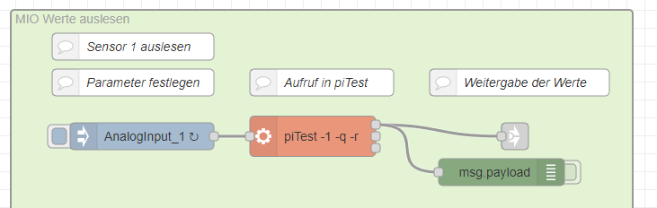
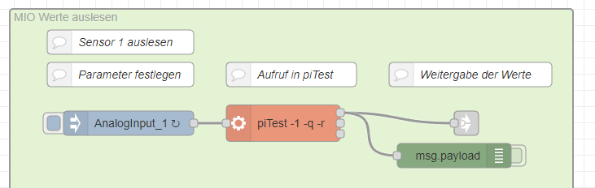
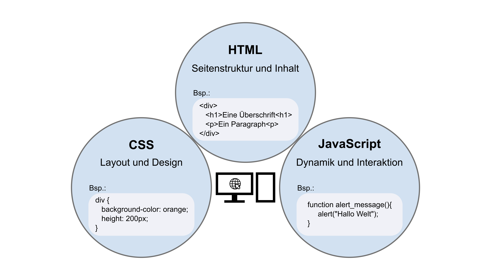
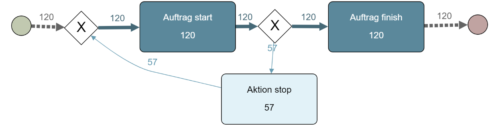
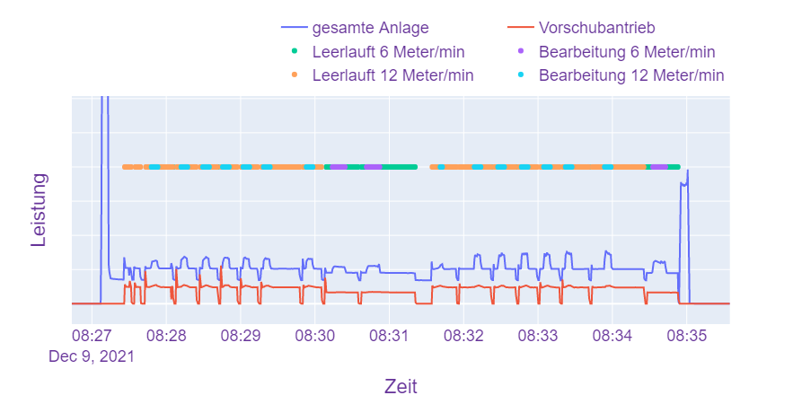
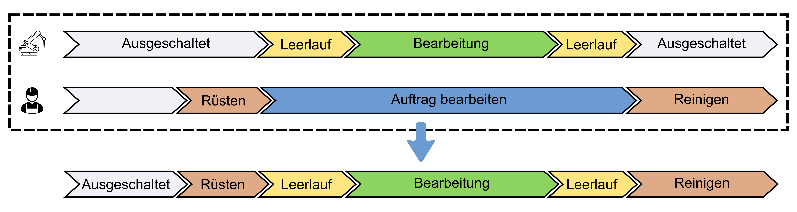

proto_cube
Industrie 4.0 Retrofit zur integrativen Erfassung von Betriebs- und Maschinendaten
Ziel
Es soll eine Infrastruktur geschaffen werden um mehr Informationen über Prozesse in der Prodution zu erhalten.
Was wird gemacht?
- Sensordaten erfassen
- Kommunikation ermöglichen
- IIoT-Plattform einrichten
- Erfassung von zusätzlichen Daten über Web-App
Theorie
- Industrie 4.0
- Digitalisierung - Vernetzung - Automatisierung
- Cypber-physisches System
- RAMI 4.0 - Verwaltungsschale
- Industrie 4.0-Retrofit
Technologische Struktur

RevPi
Node-RED
 

InfluxDB & Grafana
Web-App
proto_cube
Datenanalyse
Logs aus der App:
| Zeit | Maschine | order_id | Aktion | Mitarbeiter |
|---|---|---|---|---|
| 08:00 | Hobel | 01 | Bearbeiten start | p_01 |
| 08:15 | Hobel | 01 | Bearbeiten beendet | p_01 |
Datenanalyse

Datenanalyse

Datenanalyse

DANKE für eure Aufmerksamkeit
Jonathan Hoß